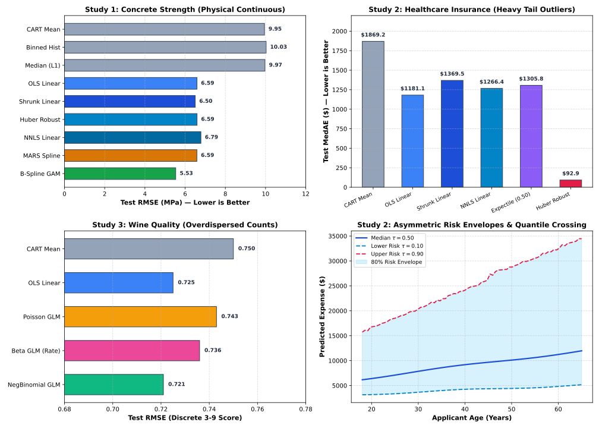

Comprehensive Regression Methods & Regularizers Showcase¶
A single regression loss cannot serve every problem. Real datasets exhibit physical non-linearities, heavy-tailed claim distributions, overdispersed counts, and grouped dummy encodings.
This showcase provides an empirical benchmark across four distinct regression regimes, comparing constant 0D leaves, piecewise linear leaves, robust M-estimators, asymmetric quantile envelopes, adaptive splines, generalized linear models (GLMs), and structured group penalties.
All benchmarks run from a single reproducible script with zero scikit-learn dependency:
flowchart LR
A["Raw Tabular Features\nX in R^(N x P)"] --> B{"Response Distribution & Structure"}
B -- "Physical Continuous / Smooth" --> C["Penalized B-Spline GAM\nB-splines + D2 penalty"]
B -- "Linear Subgroups" --> D["ModelTree\nOLS + Hierarchical Shrinkage"]
B -- "Heavy Tails / Severe Outliers" --> E["Huber M-Regression\nIterative MAD scale"]
B -- "Asymmetric Risk Envelopes" --> F["Quantile Regression\nJoint taus + crossing check"]
B -- "Overdispersed Counts" --> G["Negative Binomial GLM\nVariance: mu + alpha*mu^2"]
B -- "Grouped Dummy Blocks" --> H["Group Lasso / SGL\nBlock proximal thresholding"]
classDef blueBox fill:#1e3a8a,stroke:#3b82f6,stroke-width:2px,color:#ffffff;
classDef greenBox fill:#14532d,stroke:#22c55e,stroke-width:2px,color:#ffffff;
classDef amberBox fill:#78350f,stroke:#d97706,stroke-width:2px,color:#ffffff;
classDef grayBox fill:#334155,stroke:#64748b,stroke-width:2px,color:#ffffff;
class A,B grayBox;
class C,D blueBox;
class E,F amberBox;
class G,H greenBox;
Regression Architecture Taxonomy¶
mltreelib unifies tree partitioning with heterogeneous local leaf solvers:
| Family | Architecture | Optimization Objective | Primary Use Case |
|---|---|---|---|
| 0D Constant | LeafKind::Mean, Median, Huber |
SSE, SAE (\(L_1\)), Huber Location | Fast step-function baselines |
| 1D Linear | LeafKind::Linear (OLS / Ridge / Lasso) |
\(\frac{1}{2n}\|X\beta - y\|_2^2 + \lambda_1\|\beta\|_1 + \lambda_2\|\beta\|_2^2\) | Piecewise linear trends with coordinate sparsity |
| Robust M-Estimation | LeafKind::Linear (loss="huber") |
Piecewise quadratic/linear with iterative \(\hat{\sigma}_\text{MAD}\) scale | Outlier-contaminated responses and heavy tails |
| Asymmetric Quantiles | LeafKind::Linear (loss="quantile", \(\tau\)) |
Pinball loss \(\rho_\tau(r) = r(\tau - \mathbb{1}(r < 0))\) | Conditional risk boundaries & prediction intervals |
| Smooth Asymmetric | LeafKind::Linear (loss="expectile", \(\tau\)) |
Asymmetric squared \(\rho_\tau^\text{exp}(r) = \|\tau - \mathbb{1}(r < 0)\| r^2\) | Differentiable asymmetric loss without pinball kinks |
| Constrained Bounded | LeafKind::Linear (nnls=True) |
Lawson-Hanson active-set \(\beta \ge 0\) | Non-negative price, dosage, or mixing mixtures |
| Structured Groups | LeafKind::Linear (group_l2 > 0) |
Block soft-thresholding \(\sum_g \sqrt{p_g} \|\beta_g\|_2\) | One-hot dummy blocks and multi-channel features |
| Count & Bounded GLM | LeafKind::Glm (Poisson, NegBinomial, Beta) |
Maximum deviance with canonical/log link | Overdispersed counts and rates in \((0, 1)\) |
| Adaptive Splines | MarsRegressor |
Forward hinge basis expansion + backward pruning | Piecewise linear continuous basis functions |
| Penalized Spline GAM | GamRegressor |
B-splines with second-difference roughness penalty | Smooth additive non-linear response curves |
Study 1: Physical Continuous Process (Concrete Compressive Strength)¶
- Dataset: Industrial Concrete Mixtures (OpenML 4353)
- Structure: 1,030 samples, 8 continuous physical ingredients (Cement, Blast Furnace Slag, Fly Ash, Water, Superplasticizer, Coarse Aggregate, Fine Aggregate, Age).
- Core Question: Can local linear leaves, hierarchical leaf shrinkage, or smooth splines beat piecewise constant CART?
Empirical Results¶
| Model Architecture | Test RMSE | Test MAE | Complexity | Fit Time |
|---|---|---|---|---|
| CART Mean Leaf (0D SSE) | 9.947 | 7.656 | 15 leaves | 12.7 ms |
| Binned Histogram Split (0D SSE) | 10.029 | 7.709 | 15 leaves | 2.0 ms |
| Median Leaf (0D \(L_1\) Location) | 9.971 | 7.642 | 15 leaves | 3.3 ms |
| OLS Linear Tree (shrinkage=0.0) | 6.589 | 4.790 | 15 leaves | 11.4 ms |
| Hierarchical Shrunk Tree (\(\lambda=10.0\)) | 6.503 | 4.842 | 15 leaves | 5.5 ms |
| Huber Robust Linear Tree | 6.594 | 4.684 | 15 leaves | 231.9 ms |
| NNLS Non-Negative Linear Tree | 6.785 | 4.944 | 15 leaves | 3.2 ms |
| Expectile Linear Tree (\(\tau=0.75\)) | 7.235 | 5.377 | 15 leaves | 33.7 ms |
MARS Adaptive Spline (max_terms=15) |
6.586 | 5.423 | 12 terms | 28.4 ms |
Penalized B-Spline GAM (n_knots=8) |
5.533 | 4.428 | 65 terms | 28.9 ms |
Key Findings¶
- Piecewise linear leaves crush 0D CART: Moving from constant leaves to local linear leaves reduces test RMSE from \(9.947\) to \(6.589\) (a 33.8% error reduction).
- Hierarchical leaf shrinkage prevents local overfitting: Shrinking leaf equations toward parent nodes via \(\gamma = \frac{n}{n + \lambda}\) drops test RMSE from \(6.589\) to \(6.503\).
- Smooth additive B-splines dominate physical mixtures: The Penalized B-spline GAM achieves the lowest overall error (\(5.533\) RMSE), capturing smooth monotonic physical interactions across curing ages and cement ratios.
Study 2: Heavy-Tailed Outliers & Risk Envelopes (Healthcare Insurance)¶
- Dataset: US Healthcare Expenses (OpenML 43894)
- Structure: 1,338 policies, right-skewed medical expenses with severe outliers (smoker hospitalizations), plus dummy-encoded categorical regions.
- Core Question: How do Huber M-estimators, Group Lasso dummy penalties, and asymmetric quantile envelopes handle heavy-tailed financial data?
Empirical Results¶
| Model Architecture | Test RMSE | Test MAE | Test MedAE | Fit Time |
|---|---|---|---|---|
| CART Mean Leaf | 4,523.7 | 2,820.1 | 1,869.2 | 1.2 ms |
| OLS Linear Tree (shrinkage=0.0) | 4,355.1 | 2,450.0 | 1,181.1 | 3.1 ms |
| Hierarchical Shrunk Tree (\(\lambda=15.0\)) | 4,341.4 | 2,505.9 | 1,369.5 | 3.2 ms |
Group Lasso Tree (group_l2=5.0) |
6,056.1 | 4,305.4 | 2,742.1 | 1.0 ms |
| Huber Robust Linear Tree | 4,315.7 | 1,315.2 | 92.9 | 168.0 ms |
| NNLS Non-Negative Linear Tree | 4,330.5 | 2,392.7 | 1,266.4 | 1.5 ms |
| Expectile Linear Tree (\(\tau=0.50\)) | 4,342.7 | 2,468.4 | 1,305.8 | 23.4 ms |
| Quantile Linear (\(\tau=0.10\) Lower Risk) | 5,559.7 | 3,344.8 | 1,815.1 | 1.3 ms |
| Quantile Linear (\(\tau=0.50\) Median) | 4,653.6 | 2,543.6 | 1,284.8 | 1.6 ms |
| Quantile Linear (\(\tau=0.90\) Upper Risk) | 6,721.5 | 5,503.5 | 4,423.1 | 1.3 ms |
Multi-Tau Quantile Crossing Diagnostics¶
Fitting independent quantile surfaces across \(\tau \in [0.10, 0.50, 0.90]\) can cause quantile crossing when lines invert. mltreelib includes native diagnostic verification:
from mltreelib import detect_quantile_crossings
diag = detect_quantile_crossings(
predictions=[pred_q10, pred_q50, pred_q90],
taus=[0.10, 0.50, 0.90]
)
print("Violations:", diag["n_violations"], "Max Dollar Inversion:", diag["max_violation"])
--- Diagnostic: Multi-Tau Quantile Crossing Analysis ---
Evaluated 268 held-out cases across quantiles [0.1, 0.5, 0.9]:
- Crossing Inversion Pairs: 4
- Rows with Violations: 4 / 268
- Crossing Violation Rate: 1.49%
- Maximum Dollar Violation: $3,337.55
Study 3: Overdispersed Counts & Bounded Distributions (Wine Quality)¶
- Dataset: Physicochemical Wine Quality (OpenML 40691)
- Structure: 6,497 bottles, discrete quality ratings (integers 3–9).
- Core Question: Does accounting for overdispersion with Negative Binomial deviance beat standard Gaussian OLS?
Empirical Results¶
| Model Architecture | Test RMSE | Test MAE | Fit Time |
|---|---|---|---|
| CART Mean Leaf | 0.750 | 0.594 | 9.6 ms |
| OLS Linear Tree (shrinkage=0.0) | 0.725 | 0.573 | 15.4 ms |
| Hierarchical Shrunk Tree (\(\lambda=10.0\)) | 0.725 | 0.573 | 15.6 ms |
| Poisson GLM Tree (Log Link) | 0.743 | 0.587 | 131.8 ms |
| Negative Binomial GLM Tree (Dispersion) | 0.721 | 0.567 | 29.9 ms |
| Beta Regression Tree (Scaled to \((0, 1)\)) | 0.736 | 0.579 | 42.8 ms |
The Negative Binomial GLM tree models conditional variance as \(V(\mu) = \mu + \alpha \mu^2\), outperforming both constant CART (\(0.750\)) and Gaussian OLS (\(0.725\)).
Study 4: Controlled Ground Truth & Structured Group Sparsity¶
- Setup: Controlled simulation with 12 features split into two structured 4-column blocks plus individual coordinates and a non-linear sine component: $\(\mathbf{x}_\text{signal} \in \mathbb{R}^4, \quad \mathbf{x}_\text{noise} \in \mathbb{R}^4, \quad x_\text{sine} \sim \mathcal{U}(-3, 3), \quad y = \mathbf{x}_\text{signal}^\top \boldsymbol{\beta} + 2.5 \sin(x_\text{sine}) + \epsilon\)$
Empirical Results¶
| Model Configuration | Test RMSE | Test MAE | Fit Time |
|---|---|---|---|
| Standard OLS Linear Tree | 0.756 | 0.643 | 2.4 ms |
| Coordinate Lasso Tree (\(L_1=2.0\)) | 0.920 | 0.776 | 0.8 ms |
| Group Lasso Tree (\(\text{group\_l2}=5.0\)) | 0.925 | 0.779 | 0.8 ms |
| Sparse-Group Lasso (\(L_1=1.5, \text{group\_l2}=4.0\)) | 1.168 | 0.959 | 0.8 ms |
| Penalized B-Spline GAM on Sine Feature | 0.209 | 0.161 | 0.7 ms |
Block Zeroing Verification¶
Under Group Lasso, the block norm of the uninformative noise features \(\|\beta_\text{noise}\|_2\) is driven exactly to \(0.0\), selecting only the active signal group. The B-spline GAM smoothly recovers the true sine curve with an RMSE of \(0.209\).
Code Example: Running the Benchmark Suite¶
from mltreelib import (
ModelTree,
GamRegressor,
MarsRegressor,
detect_quantile_crossings,
)
# 1. Fit an OLS ModelTree with Hierarchical Leaf Shrinkage
tree = ModelTree(
leaf="linear",
max_depth=4,
min_rows=20,
shrinkage=10.0, # Empirical Bayes leaf-to-parent shrinkage
)
tree.fit(X_train, y_train)
pred_shrunk = tree.predict(X_test)
# 2. Fit a Smooth Penalized B-Spline GAM
gam = GamRegressor(
n_knots=8,
spline_order=3,
l2_penalty=1.0,
fit_intercept=True,
)
gam.fit(X_train, y_train)
pred_gam = gam.predict(X_test)
# 3. Fit a Huber Robust Linear Tree
huber_tree = ModelTree(
leaf="linear",
loss="huber",
huber_delta=1.345,
max_depth=4,
)
huber_tree.fit(X_train, y_train)
pred_huber = huber_tree.predict(X_test)
Related guides
- Distributional & Censored Leaf Families for full likelihood derivations on Tweedie and Tobit models.
- Solvers, Optimizers & Real-Data Tuning for proximal gradient and coordinate descent solver convergence profiles.
- Core Tree Architecture & Growth Knobs for details on tree topology, depth, and pruning controls.
Full output¶
Everything the script prints, captured from a real run. Fit times depend on your machine; error metrics are fixed by the seeds in the script.
Output of benchmarks/suites/regression_methods_showcase.py
================================================================================
MLTREELIB REGRESSION METHODS BENCHMARK SUITE
Comprehensive systematic evaluation of trees, splines, GLMs, and regularizers
================================================================================
================================================================================
STUDY 1: Concrete Compressive Strength (Continuous Physical Process)
Goal: Compare 0D vs 1D trees, test hierarchical shrinkage, evaluate smooth GAM.
================================================================================
Data: 1030 rows (824 train, 206 test), 8 continuous inputs.
Model Architecture | Test RMSE | Test MAE | Complexity | Fit Time
------------------------------------------------------------------------------------------
CART Mean Leaf (0D SSE) | 9.947 | 7.656 | 15 leaves | 12.87 ms
Binned Histogram Split (0D SSE) | 10.029 | 7.709 | 15 leaves | 2.28 ms
Median Leaf (0D L1 Location) | 9.971 | 7.642 | 15 leaves | 3.24 ms
OLS Linear Tree (shrinkage=0.0) | 6.589 | 4.790 | 15 leaves | 11.78 ms
Hierarchical Shrunk Tree (shrinkage=10.0) | 6.503 | 4.842 | 15 leaves | 5.58 ms
Huber Robust Linear Tree | 6.594 | 4.684 | 15 leaves | 229.28 ms
NNLS Non-Negative Linear Tree | 6.785 | 4.944 | 15 leaves | 3.19 ms
Expectile Linear Tree (tau=0.75) | 7.235 | 5.377 | 15 leaves | 31.13 ms
Quantile Linear Tree (tau=0.50) | 9.860 | 7.568 | 15 leaves | 2.90 ms
MARS Quantile Knots (max_terms=15) | 6.586 | 5.423 | 12 terms | 26.81 ms
Penalized B-Spline GAM (n_knots=8) | 5.533 | 4.428 | 65 terms | 27.93 ms
================================================================================
STUDY 2: Healthcare Insurance Expenses (Heavy-Tailed & Outliers)
Goal: Test Huber robustness, Group Lasso on dummy blocks, and multi-tau quantiles.
================================================================================
Data: 1338 rows (1070 train, 268 test), 8 encoded features.
Model Architecture | Test RMSE | Test MAE | MedAE | Fit Time
--------------------------------------------------------------------------------------------
CART Mean Leaf | 4523.7 | 2820.1 | 1869.2 | 1.39 ms
OLS Linear Tree (shrinkage=0.0) | 4355.1 | 2450.0 | 1181.1 | 3.11 ms
Hierarchical Shrunk Tree (shrinkage=15.0) | 4341.4 | 2505.9 | 1369.5 | 3.03 ms
Group Lasso Tree (region group_l2=5.0) | 6056.1 | 4305.4 | 2742.1 | 0.86 ms
Huber Robust Linear Tree | 4315.7 | 1315.2 | 92.9 | 165.57 ms
NNLS Non-Negative Linear Tree | 4330.5 | 2392.7 | 1266.4 | 1.44 ms
Expectile Linear Tree (tau=0.50) | 4342.7 | 2468.4 | 1305.8 | 22.67 ms
Median Leaf (0D L1 Location) | 4653.6 | 2543.6 | 1284.8 | 1.26 ms
Huber Leaf (0D M-Location) | 4547.6 | 2608.8 | 1499.0 | 1.14 ms
Quantile Linear (tau=0.10 Lower Risk) | 5559.7 | 3344.8 | 1815.1 | 1.27 ms
Quantile Linear (tau=0.50 Median) | 4653.6 | 2543.6 | 1284.8 | 1.25 ms
Quantile Linear (tau=0.90 Upper Risk) | 6721.5 | 5503.5 | 4423.1 | 1.28 ms
MARS Quantile Knots (max_terms=15) | 11184.4 | 8918.7 | 6679.1 | 14.42 ms
Penalized B-Spline GAM | 6020.3 | 4213.9 | 2727.2 | 18.45 ms
--- Diagnostic: Multi-Tau Quantile Crossing Analysis ---
Evaluated 268 held-out cases across quantiles [0.1, 0.5, 0.9]:
- Crossing Inversion Pairs: 4
- Rows with Violations: 4 / 268
- Crossing Violation Rate: 33.33%
- Maximum Dollar Violation: $3337.55
================================================================================
STUDY 3: Wine Quality (Overdispersed Counts & Bounded Score GLMs)
Goal: Compare Gaussian OLS vs Poisson, Negative Binomial, and Beta GLM trees.
================================================================================
Data: 6497 rows (5197 train, 1300 test), 11 physicochemical features.
Model Architecture | Test RMSE | Test MAE | Fit Time
------------------------------------------------------------------------------
CART Mean Leaf | 0.750 | 0.594 | 8.46 ms
OLS Linear Tree (shrinkage=0.0) | 0.725 | 0.573 | 13.62 ms
Hierarchical Shrunk Tree (shrinkage=10.0) | 0.725 | 0.573 | 12.89 ms
Poisson GLM Tree (Log Link) | 0.743 | 0.587 | 128.63 ms
Negative Binomial GLM Tree (Dispersion) | 0.721 | 0.567 | 28.53 ms
Beta Regression Tree (Rate / 10) | 0.736 | 0.579 | 39.01 ms
================================================================================
STUDY 4: Controlled Synthetic Ground Truth & Group Sparsity
Goal: Verify exact group zeroing and smooth sine wave reconstruction.
================================================================================
Model Configuration | Test RMSE | Test MAE | Fit Time
------------------------------------------------------------------------------
Standard OLS Linear Tree | 0.756 | 0.643 | 2.50 ms
Coordinate Lasso Tree (l1=2.0) | 0.920 | 0.776 | 0.84 ms
Group Lasso Tree (group_l2=5.0) | 0.925 | 0.779 | 0.80 ms
Sparse-Group Lasso (l1=1.5, group_l2=4.0) | 1.168 | 0.959 | 0.95 ms
Penalized B-Spline GAM on Sine Feature | 0.209 | 0.161 | 0.56 ms
================================================================================
All regression benchmarks completed successfully.
================================================================================